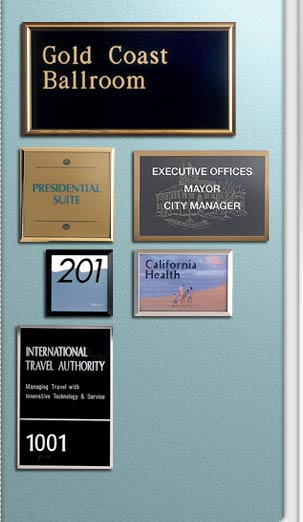

|
Precision mitered from an extrusion of premium
alloy in three professional styles - Beveled,
Radiused, and Boxed - makes this sign system
a top of the line favorite. Each style has several
features that make professional signs simple.
- Each frame is designed
for complete support of 1/16" sign material.
- Eight rich anodized colors
are available in all three styles: Polished
Silver, Satin Silver, Polished Yellow Gold,
Satin Yellow Gold, Polished Rose Gold, Satin
Rose Gold, Matte Black, and Arch Bronze.
- Minimum size 2" x 4".
Maximum size 36" x 36”
- A trough 1/2" wide runs
the entire inside perimeter of each frame
which accommodates adhesive-backed 3M DUAL
LOCK™ or Sign Snap so that a tamper-resistant
plate snaps in and out with the use of a suction
cup.
- Frames are designed for
mounting to wall or door with double-sided
tape or silicone-type adhesive.
PREMIER PLUS FRAMES
Precision mitered from an extrusion of premium
alloy in four professional styles: Beveled,
Quarter Round, Boxed, and Quarter Inch Solid,
makes this sign system a top of the line favorite.
- Eight rich anodized colors
are available in all four styles: Polished
Silver, Satin Silver, Polished Yellow Gold,
Satin Yellow Gold, Polished Rose Gold, Satin
Rose Gold, Arch Bronze, and Matte Black.
- Seven powder coat finishes
are available: Medium Gray, Pewter (light
gray), Black, White, Almond, Brown, and Arch
Brown.
- Each frame style is available
with either a 3/16" or 5/16" inside depth.
Inside depth must be specified when ordering.
- Frames are designed for
mounting with double-sided tape or silicone
adhesives.
- All frames are available
with optional matte black metal inside, suitable
for changeable magnetic signs.
- Lenses are laser cut from
semi-flexible .080 non glare acrylic and are
designed with tabs that snap securely into
frames. Lenses can easily be removed by using
a suction cup placed in the center of the
frame.
|

|